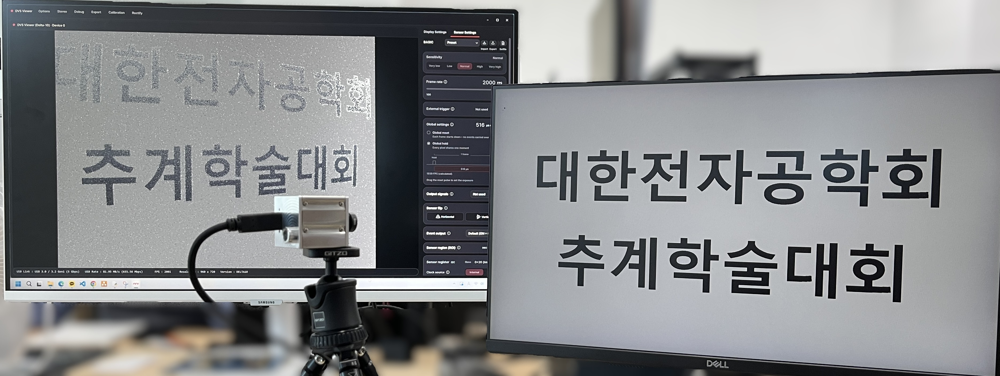
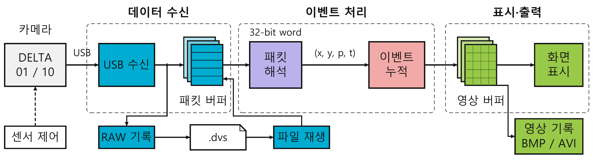
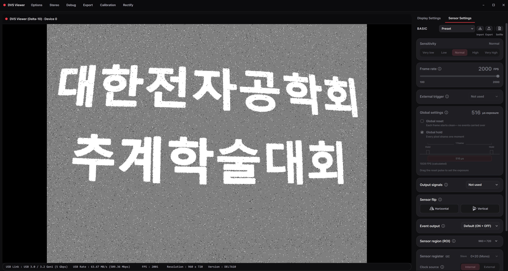

DELTA 카메라와 Viewer 연동
DELTA 이벤트 카메라를 연결해 촬영하고, 기록한 데이터를 다시 살펴볼 수 있도록 팀원들과 Viewer 연동을 진행했습니다. 고속 수신부터 이벤트 해석, 화면 표시와 저장·재생까지 이어지는 구조를 설명하고, 제가 구현한 캘리브레이션과 좌표 보정 기능이 이 흐름에 어떻게 연결되는지 정리합니다.


1. 촬영부터 재생까지 연결하기
이벤트 카메라는 밝기 변화를 감지한 위치와 극성 정보를 보낸다. 일반 카메라처럼 완성된 컬러 영상을 받아 곧바로 보여주는 것과 달리, 호스트 프로그램에서 센서의 데이터 형식을 해석하고 관찰할 시간 범위의 이벤트를 모아야 한다. 카메라를 USB로 인식하는 것에서 끝나는 작업이 아니라, 수신한 데이터를 어떤 기준으로 화면에 표시하고 저장할지까지 연결해야 했다.
팀원들과 기존 카메라·SDK 구조를 바탕으로 C++ 처리부와 Qt 기반 Viewer를 연동했다. 실시간 촬영, 센서 설정, 파일 기록과 재생이 같은 프로그램 안에서 이어지도록 구성하고, 각 기능이 주고받는 데이터와 실행 상태를 맞췄다. 이 글에서는 함께 구성한 처리 구조를 먼저 설명한 뒤, 그 안에서 직접 진행한 보정 기능 연동과 운용 작업을 다룬다.
촬영 중에는 감도와 센서 출력 속도를 조절하면서 이벤트 영상을 확인한다. 필요한 장면은 이벤트 데이터로 저장하고, 촬영을 마친 뒤에는 같은 파일을 다시 열어 누적 조건을 바꿔 살펴본다. 센서 설정부터 자료 재활용까지 한 흐름으로 이어지는 것이 통합 운용의 목표였다.
프로그램을 이해할 때는 센서에 명령을 보내는 제어 흐름과, 센서에서 데이터를 받아오는 처리 흐름을 나누어 보았다. 제어 흐름에서는 Qt 화면의 선택을 컨트롤러가 받아 SDK의 장치 설정으로 전달한다. 데이터 흐름에서는 USB 수신부가 패킷을 전달하고, 해석·누적 모듈을 거쳐 표시용 프레임을 만든다. 버튼 하나를 추가하더라도 이 두 흐름이 만나는 지점을 알아야 촬영 상태와 화면 표시를 함께 맞출 수 있었다.
| 계층 | 담당하는 일 | 다음 단계에 전달하는 것 |
|---|---|---|
| 화면·컨트롤러 | 장치 선택, 설정 적용, 촬영·저장 요청 | 사용자가 요청한 조건과 실행 명령 |
| 장치·스트림 | 센서 설정, USB 수신과 파일 입력 | 이벤트를 담은 패킷과 장치 상태 |
| 해석·누적 | 좌표·극성·시간 복원, 누적 조건 판단 | 이벤트 배열 또는 표시용 맵 |
| 표시·기록 | GPU 화면 갱신, 원시 파일·영상 출력 | 관찰 화면과 다시 사용할 촬영 자료 |
예를 들어 DeviceController는 설정 파일이 성공적으로 적용됐는지 확인한 뒤 촬영을 허용하고, DVSPlayer는 SDK 실행과 표시용 프레임 전달을 연결한다. 이런 경계를 유지하면 화면 배치를 바꾸는 작업과 센서 통신을 바꾸는 작업을 분리할 수 있다. 팀원들과 연동할 때도 각 모듈이 무엇을 받고 어떤 상태를 반환해야 하는지 기준을 맞추는 데 도움이 됐다.
2. 수신·표시·기록의 분리
USB 수신, 이벤트 해석, 화면 갱신과 디스크 쓰기는 처리 시간과 실행 주기가 서로 다르다. 이 작업들을 순서대로 기다리게 하면 파일 쓰기가 잠시 늦어지는 동안 다음 데이터도 받지 못하는 구조가 된다. 따라서 카메라에서 받아들이는 단계와, 받은 데이터를 소비하는 단계를 분리했다.


DELTA 10 수신부는 여러 비동기 USB 요청을 대기시킨다. 완료된 요청의 데이터를 처리용 버퍼에 전달하고 다음 수신을 이어가며, 해석과 기록은 각각의 스레드가 담당한다. 생산자·소비자 구조로 보면 카메라 수신부가 생산자이고, 표시 처리부와 파일 기록부가 서로 다른 소비자이다. 두 소비자의 처리 속도가 달라도 수신 단계가 매번 화면 표시나 파일 쓰기의 완료를 기다리지 않도록 한 것이다.
비동기 수신에서 중요한 것은 여러 요청을 걸어 두는 것과 데이터 순서를 유지하는 것을 함께 만족하는 일이다. 수신부는 엔드포인트별로 요청을 제출한 순서를 관리한다. 앞선 요청이 아직 완료되지 않았다고 뒤쪽 데이터를 먼저 해석하면, 좌표 기준이나 시간 정보를 담은 패킷보다 그 정보를 사용하는 이벤트가 먼저 전달될 수 있기 때문이다. 카메라가 보낸 순서가 해석 단계까지 이어져야 한다.
또 USB 수신 메모리는 다음 전송에도 재사용된다. 따라서 완료된 데이터를 저장 큐와 처리 큐에 복사하거나 필요한 읽기를 끝낸 뒤에야 같은 메모리로 다음 수신을 요청한다. 포인터만 넘긴 채 곧바로 재사용하면 다른 스레드가 읽는 도중 내용이 바뀔 수 있다. 이 부분은 단순히 복사를 줄이는 최적화보다, 누가 언제까지 데이터를 사용할 수 있는지를 정하는 소유권 문제로 보았다.
여기서 중요한 것은 스레드 개수보다 데이터가 어느 단계에서 분기되는가이다. 화면에는 해석·누적된 영상을 보내지만, 원시 기록에는 해석 전 패킷을 사용한다. 화면 누적 시간을 바꾸더라도 기록된 이벤트 정보는 그 표시 조건에 묶이지 않는다. 장시간 저장에서 실제로 겪은 속도·용량 문제와 쓰기 처리 개선은 DVS 장시간 녹화 개선에 따로 정리했다.
데이터가 밀렸을 때의 정책도 표시와 기록에서 다르게 잡았다. 단일 카메라의 미리보기는 처리할 공간이 없으면 해당 표시 데이터를 건너뛰고 수신을 계속하지만, 별도로 분기한 원시 기록에는 그 정책을 그대로 적용하지 않는다. 저장 큐가 감당할 수 없는 상태는 녹화 오류로 알리고 종료 절차로 넘긴다. 화면의 최신성을 위한 생략과, 실험 자료의 누락을 같은 문제로 취급하지 않는 구조이다.
큐를 크게 잡는 것만으로 지속적인 처리량 차이가 해결되지는 않는다. 입력이 초당 R, 저장 처리가 초당 W만큼 진행되고 R이 W보다 크면, 대기량은 시간에 따라 대략 (R−W)만큼씩 늘어난다. 큐는 일시적인 지연을 흡수할 수 있지만 장시간 촬영에서는 수신량, 처리 비용과 저장장치의 지속 쓰기 속도를 함께 맞춰야 한다. 이후 녹화 환경을 개선할 때도 이 구분을 기준으로 병목을 좁혔다.
3. 패킷을 이벤트 영상으로 바꾸기
NRV 센서는 Group AER 형식으로 이벤트를 묶어 보낸다. 32비트 패킷에 그룹 주소와 비트마스크 등을 담아 최대 16개 픽셀의 이벤트를 표현하며, 호스트는 이를 풀어 각 이벤트의 좌표와 극성을 복원한다. 밝아진 변화와 어두워진 변화는 ON·OFF 극성으로 구분한다.
여기서 USB 전송 한 번의 끝과 센서 프레임의 끝은 다르다. 전송 블록 안에는 좌표 기준, 시간 정보, 이벤트 그룹과 프레임 종료 정보가 섞여 들어온다. PacketParser는 헤더로 종류를 구분하고 앞서 읽은 좌표·시간 상태를 유지하면서 다음 이벤트를 해석한다. 따라서 수신 블록마다 한 장의 영상이라고 가정하는 대신, 데이터 안의 프레임 종료 정보를 읽어 센서 프레임을 구분한다.
시간 정보도 데이터 형식에 맞게 읽어야 한다. NRV의 이벤트 프레임에서는 여러 픽셀이 프레임 단위의 시간 정보를 공유한다. 따라서 USB 패킷이 PC에 도착한 시각을 개별 픽셀의 발생 시각으로 사용하는 대신, 데이터에 포함된 프레임 시간과 이벤트 좌표를 함께 해석한다. 이 구조와 Group AER의 의미는 직접 작성한 NRV 기술 소개에도 설명해 두었다.
복원한 이벤트는 관찰 목적에 따라 영상으로 누적한다. 짧은 시간만 모으면 빠른 움직임의 잔상이 줄어들지만 한 화면에 보이는 점도 적어진다. 반대로 오래 모으면 형태를 알아보기 쉬워지는 대신 서로 다른 시각의 움직임이 겹친다. Viewer에서는 시간, 이벤트 수, 센서 프레임 수를 기준으로 누적 조건을 선택할 수 있도록 연결했다.
세 기준은 같은 장면을 서로 다르게 나눈다. 시간 기준은 일정한 관찰 구간을 유지하고, 이벤트 수 기준은 한 화면에 모이는 정보량을 맞추는 대신 움직임에 따라 한 장이 만들어지는 시간이 달라진다. 센서 프레임 수 기준은 지정한 개수의 프레임 종료를 세어 누적한다. 예를 들어 센서가 2,000 FPS로 동작할 때 20개 프레임을 모으면 약 10 ms의 변화가 한 화면에 들어간다. 이 누적 구간과 실제 모니터를 갱신하는 주기는 별도로 생각해야 한다.


센서 FPS와 화면 갱신 속도, 초당 수신량은 서로 다른 값이다. 센서 FPS는 센서가 이벤트 프레임을 읽어내는 주기를, 수신량은 실제로 전달되는 데이터의 양을 나타낸다. 장면의 움직임과 감도가 달라지면 같은 FPS에서도 이벤트 수가 달라진다. 연결 과정에서는 숫자 하나만 보기보다 촬영 조건과 데이터량, 화면에 나타나는 결과를 함께 살폈다.
화면 표시에서도 데이터 표현을 분리했다. Polarity 모드에서는 픽셀의 ON·OFF·배경 상태를 한 바이트 맵으로 전달하고, GLViewer의 셰이더에서 색을 입힌다. CPU에서 매번 세 채널 RGB 영상으로 풀어 쓰는 대신, 관측 정보와 표시 색상을 나누어 다루는 방식이다. 색상 변경은 표시 단계에서 처리하고 이벤트의 극성 정보는 그대로 유지한다.
Qt 화면 갱신 타이머는 다시 그리기를 요청하고, 실제 텍스처 갱신은 OpenGL 문맥이 준비된 그리기 단계에서 수행한다. 수신 스레드가 직접 화면을 그리는 구조와 달리, 장치 데이터 처리와 창의 크기 변경·최소화 같은 화면 상태를 분리할 수 있다. Viewer 성능을 살필 때도 수신, 이벤트 누적, GPU 표시 중 어느 단계의 비용인지 구분하는 것이 중요했다.
4. 촬영 결과를 다시 분석하기
누적 영상만 저장하면 나중에 누적 시간을 줄이거나 이벤트를 다른 기준으로 나누기 어렵다. 이미 한 장으로 합쳐진 정보에서 개별 이벤트를 다시 꺼낼 수 없기 때문이다. 그래서 .dvs 파일에는 원시 패킷과 모델·시간 설정 정보를 보관하고, 파일을 열 때 실시간 입력과 같은 해석·누적 모듈을 사용하도록 구성했다.
이 방식에서는 카메라와 저장 파일이 서로 다른 입력이지만, 그 뒤의 영상 구성 과정은 같다. 촬영할 때 형태가 흐리게 보였더라도 파일을 다시 열고 누적 조건을 조절해 같은 장면을 살펴볼 수 있다. 분석에 사용할 이벤트 자료는 유지하고, 공유할 결과 영상은 BMP나 AVI로 출력하는 식으로 원자료와 표현 결과의 역할을 나눴다.
재생에 필요한 것은 이벤트 좌표만이 아니다. 파일 헤더에는 모델과 클럭·타임스탬프 단위처럼 패킷을 해석하는 기준도 함께 기록한다. 센서가 보낸 시간 값은 정해진 단위로 환산해야 하므로, 촬영 당시 설정과 분리해서 읽으면 같은 값도 다른 시간 간격으로 해석될 수 있다. 데이터를 남기는 일과 그 데이터를 해석할 조건을 남기는 일을 함께 처리한 것이다.
파일 탐색에서는 선택 구간만 읽어 한 프레임을 구성하고, 다시 재생할 때는 선택 위치부터 일반 재생으로 이어지도록 한다. 누적 조건을 바꾸어 비교하거나 관심 장면을 반복해서 확인할 수 있어, 매번 카메라로 같은 장면을 다시 만들지 않고도 표시·분석 기능을 점검할 수 있다.
실시간 입력과 재생에 별도 해석 코드를 두면 같은 데이터를 다르게 처리하는 문제가 생기기 쉽다. 공통 모듈을 쓰는 구조를 이해하면서, 기능을 추가할 때도 어느 입력에서 사용할 수 있는지와 저장된 데이터에 어떤 영향을 주는지를 함께 확인하게 됐다.
5. 캘리브레이션과 좌표 보정
직접 구현한 캘리브레이션에서는 점멸 원 격자를 촬영해 카메라 내부 파라미터와 렌즈 왜곡 계수를 구하고, 결과를 YAML 파일로 저장·불러오도록 했다. Viewer에서는 이 결과를 사용해 모노 카메라의 왜곡을 보정하고, 스테레오 영상의 대응점을 같은 높이로 정렬하는 기능을 연결했다.
보정은 영상 누적 전에 이벤트 좌표에 적용한다. 이벤트를 보정 좌표로 옮기고 패킷으로 다시 구성한 뒤 표시 처리로 넘기므로, 뒤쪽 처리부에서는 같은 이벤트 형식을 사용할 수 있다. 단일 카메라의 원시 기록은 보정 전에 분기해 수신 패킷을 남기는 구조이다. 관찰용 좌표 보정과 원자료 보관이 어디에서 나뉘는지 확인하며 연동했다.
이벤트 영상에서 이 순서는 특히 중요하다. 이미 누적된 한 장을 변형하는 것과 개별 이벤트 좌표를 보정한 뒤 누적하는 것은 처리 대상이 다르다. 좌표 보정을 앞에 두면 이후의 시간·이벤트 수 기반 누적은 보정된 좌표계에서 그대로 동작한다. 스테레오에서도 좌우 대응점을 같은 높이로 정렬하는 기하 처리와, 어느 시간 범위의 이벤트를 볼지 결정하는 누적 처리를 나눌 수 있다.
이 과정에서 보정 알고리즘의 계산 결과뿐 아니라, 저장 형식과 실시간 처리 순서까지 맞춰야 실제 촬영 기능으로 사용할 수 있다는 점을 배웠다. 세부 원리와 사용 절차는 캘리브레이션 설명과 Rectify 설명에 이어서 정리해 두었다.
6. 실행 상태와 자원 수명
촬영을 시작하는 순서만큼 멈추는 순서도 중요했다. 프레임을 읽는 스레드가 살아 있는데 SDK 버퍼를 먼저 없애면, 이미 해제된 메모리에 접근할 수 있다. 현재 재생·일시정지 흐름은 표시용 프레임을 가져오는 스레드부터 종료하고 join()으로 끝났음을 확인한 뒤 SDK의 일시정지와 버퍼 정리를 진행한다. 재개할 때는 반대로 SDK 쪽 버퍼가 준비된 뒤 프레임 전달을 다시 시작한다.
이것은 단순히 실행 플래그를 끄는 것과 다르다. 플래그는 종료를 요청하지만, 자원을 해제하려면 실제 사용이 끝났는지까지 확인해야 한다. 장치 연결, 설정 적용, 촬영, 저장, 정지 상태를 구분하고 각 상태에서 가능한 조작을 정리해야 여러 기능이 함께 있어도 같은 데이터를 일관되게 다룰 수 있었다.
7. 통합 과정에서 배운 점
Viewer 연동은 카메라와 SDK, 처리부와 UI를 팀원들과 맞춰가는 작업이었다. 한 기능이 화면에서 동작하더라도 수신 상태나 파일 재생, 다른 센서 설정과 연결했을 때 같은 방식으로 사용할 수 있어야 했다. 기존 처리 구조를 따라가며 기능을 넣을 위치를 확인하고, 수정한 부분이 다른 모듈에 미치는 영향을 함께 살폈다.
제가 맡은 보정과 운용 기능을 연결하면서, 데이터의 의미와 프로그램의 상태를 함께 다루는 방법을 익혔다. 특히 원시 패킷과 누적 영상을 구분하고, 센서에서 바꾸는 설정과 화면에서만 바꾸는 설정을 나누는 관점이 이후 기능 확장에도 이어졌다. 다음 글에서는 센서 설명 시트를 읽고 Viewer에 없던 제어 기능을 직접 추가한 과정을 설명한다.